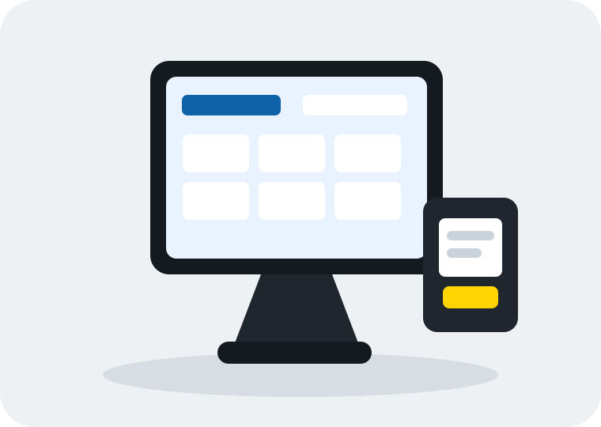
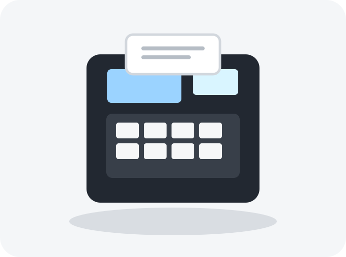
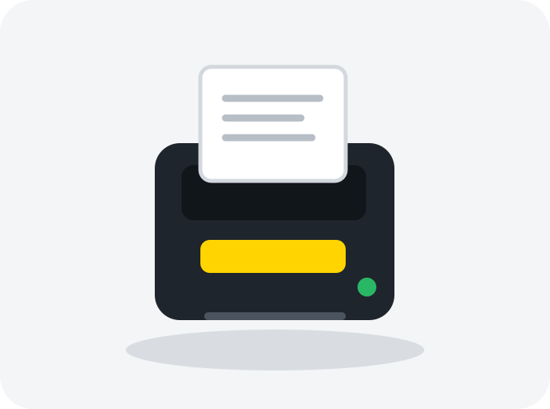

Prodotti professionaliSoluzioni selezionate per affidabilità.
REGISTRATORI DI CASSA A ROMA
Il punto cassa giusto per la tua attività.
Registratori telematici, sistemi touch, stampanti fiscali e software gestionali. Vendita, configurazione, fiscalizzazione e assistenza tecnica con un unico referente.
✓ Installazione completa✓ Configurazione fiscale✓ Assistenza post-vendita

Soluzioni professionalinegozi • bar • ristoranti • retail
InstallazioneConfigurazione e messa in servizio.
Assistenza rapidaSupporto tecnico su Roma e provincia.
Consulenza direttaParli direttamente con un tecnico.
SOLUZIONI PER IL PUNTO VENDITA
Dalla cassa compatta al sistema touch completo
Scegliamo la configurazione in base al tipo di attività, al volume di lavoro e alle integrazioni necessarie.

REGISTRATORI TELEMATICI
RT da banco e portatili
Per negozi, ambulanti e attività di servizio: semplicità, affidabilità e gestione dei corrispettivi telematici.
Richiedi informazioni →SISTEMI TOUCH
Casse touch e all-in-one
Interfacce intuitive per velocizzare vendite, comande, pagamenti e gestione del punto vendita.
Scopri la soluzione →
STAMPANTI TELEMATICHE
Stampanti RT per POS
Per software gestionali, postazioni PC/POS, ristorazione e retail con collegamenti professionali.
Richiedi informazioni →MODELLI IN EVIDENZA
Soluzioni attuali dei principali marchi
Disponibilità e configurazioni vengono verificate al momento del preventivo.
EPSON
FP-81II RT
Stampante fiscale professionale con stampa termica veloce e collegamenti seriale, USB ed Ethernet.
Retail • Hospitality • 80 mmEPSON
FP-90III RT
Registratore telematico della gamma fiscale Epson pensato per postazioni professionali e integrate.
RT nativo • POS • Wi-Fi opz.CUSTOM
FUSION-N 2.0 RT
POS all-in-one Android con touch da 10” e stampante telematica integrata da 80 mm.
Android • Touch • Ho.Re.Ca.CUSTOM
WINDKEY-N LITE RT
Registratore compatto per negozio e mobilità, con opzioni Wi-Fi/Bluetooth e batteria.
Compatto • Ambulanti • RTITALRETAIL ZUCCHETTI
RT NEXT
RT compatto salvaspazio con doppio display grafico per una gestione rapida del punto cassa.
Compatto • Doppio display • RTITALRETAIL ZUCCHETTI
Spice T Plus
Registratore telematico Android touch all-in-one con stampante e display cliente integrati.
Android • All-in-one • TouchAXON MICRELEC
Helios TOUCH RT
Registratore telematico con videotastiera touch da 7” e display cliente.
Touch 7” • Display cliente • RTAXON MICRELEC
Helios PLUS RT
Registratore telematico compatto progettato per un utilizzo intensivo nel punto vendita.
Compatto • Retail • AffidabileImmagini illustrative. Caratteristiche, disponibilità e omologazioni possono variare in base alla versione.
MARCHI TRATTATI
Hardware e software per ogni esigenza
Le principali soluzioni per registratori telematici, touch, stampa e gestione del punto vendita.
Fiscalità e stampa
Registratori telematici e stampanti fiscali per retail e hospitality.
RT, POS e stampanti
Soluzioni complete per punto vendita, mobilità e sistemi all-in-one.
Hardware + software Zucchetti
Registratori, sistemi Android/Windows e software verticali.
Software gestionali
Soluzioni digitali per vendite, ristorazione e processi operativi.
Tecnologie retail
Sistemi integrati per modernizzare il punto vendita.
Registratori e stampanti RT
Terminali, registratori telematici e stampanti professionali.
SERVIZI
Ti seguiamo prima e dopo l'acquisto
Dalla scelta del prodotto fino alla messa in servizio e all'assistenza.
Consulenza
Scelta di hardware, software e accessori.
Installazione
Collegamenti, configurazione e avviamento.
Fiscalizzazione
Supporto tecnico per la messa in servizio dell'RT.
Assistenza tecnica
Interventi e supporto su Roma e provincia.
PER OGNI ATTIVITÀ
Configurazioni pensate per il lavoro reale
Una postazione coerente con il tuo flusso di lavoro.
Bar e ristorazione
Touch, stampanti, comande e software gestionali.
Negozi e retail
Cassa veloce, barcode, magazzino e pagamenti.
Ambulanti
RT compatti con batteria e connettività mobile.
Servizi
Soluzioni semplici per beauty, officine e professionisti.
DOMANDE FREQUENTI
Prima di scegliere il registratore
Per una configurazione precisa, parlane con un tecnico.
Quale RT è più adatto alla mia attività?
Dipende da volume di scontrini, spazio, touch, software, barcode, pagamenti e mobilità.
Posso collegarlo a un gestionale?
Sì, molti modelli supportano collegamenti seriali, USB o Ethernet e protocolli dedicati.
Fate installazione e assistenza a Roma?
Sì, il servizio è dedicato a Roma e provincia.
Avete sistemi touch completi?
Sì, possiamo configurare POS touch con stampante telematica, cassetto, display cliente e software.
Non sai quale modello scegliere?
☎ 06 21129078Parla direttamente con un tecnico.
CONTATTI
Preventivi e assistenza
Descrivici la tua attività e le funzioni che ti servono. Ti aiutiamo a scegliere una soluzione concreta.